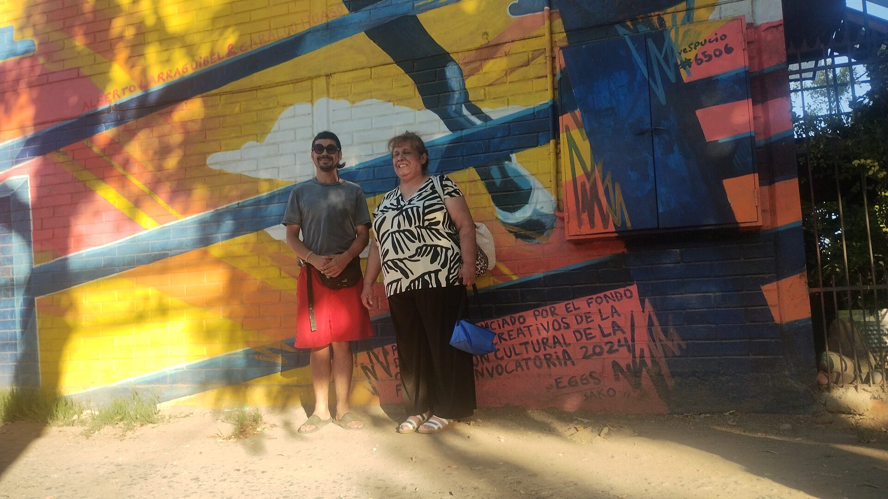

Arte público
Procesos visuales y participativos para recuperar espacios, activar memoria e identidad territorial.
Fundación sin fines de lucro · La Florida · Chile
Fundación N.A.H.U.E.L. articula arte, cultura, educación, ecología, salud comunitaria, urbanismo y participación ciudadana como dimensiones integradas de transformación social, territorial y ambiental.
Procesos visuales y participativos para recuperar espacios, activar memoria e identidad territorial.
Talleres, laboratorios creativos y experiencias formativas para comunidades diversas.
Conservación, documentación y puesta en valor de obras, espacios y memorias locales.
Acciones culturales que integran cuidado, territorio, convivencia, ecología y salud comunitaria.
Misión institucional
La Fundación N.A.H.U.E.L. – Arte, Territorio y Bienestar Regenerativo promueve el bienestar integral de personas y comunidades desde una perspectiva holística, territorial y colaborativa.
Su trabajo busca generar proyectos verificables, sostenibles y socialmente significativos, capaces de dejar capacidades instaladas, memoria pública y mejoras concretas en los espacios donde se desarrollan.
Objeto institucional
La fundación articula el arte, la cultura, el urbanismo, la salud, la educación, el deporte, la ecología y la participación ciudadana como dimensiones interdependientes de desarrollo comunitario.
Líneas de acción
Diseño, ejecución, restauración y mediación de proyectos visuales en espacios comunitarios e institucionales.
Talleres, metodologías participativas, experiencias artísticas intergeneracionales y formación comunitaria.
Vinculación con juntas de vecinos, escuelas, jardines infantiles, centros de salud y organizaciones locales.
Registro, conservación, documentación y puesta en valor de procesos culturales y bienes simbólicos territoriales.
Registro de actividad · REG-2026-001
Primera acción documentada por Fundación N.A.H.U.E.L. en territorio: intervención de mantención patrimonial y reintegración visual realizada el 17 de febrero de 2026, entre 18:30 y 20:00 hrs, en la comuna de La Florida.
La actividad consistió en neutralizar una intervención vandálica puntual y reintegrar cromáticamente el sector afectado mediante repinte localizado. El trabajo resguardó la continuidad estética del mural y su valor cultural para el entorno cotidiano de la comunidad residente.
El procedimiento incluyó inspección visual, delimitación del paño afectado, registro fotográfico inicial, preparación de tonos compatibles, reintegración controlada, revisión final y documentación de cierre.




Criterio de publicación: se presenta una selección visual del proceso sin transcribir contenido ofensivo ni exponer datos personales innecesarios. El respaldo completo queda en el archivo institucional de la fundación.
Archivo de proyectos
Este sitio reunirá actividades, proyectos financiados, registros públicos, convocatorias, documentos institucionales y memorias de trabajo comunitario.
Institucionalidad